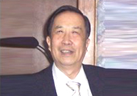
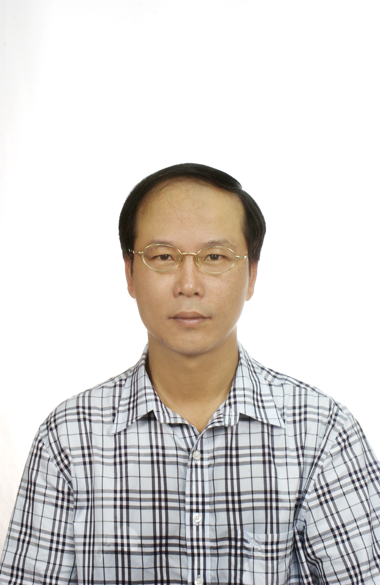
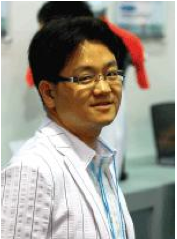

Invited speakers
Back to the program page.| Prof. Sihan Qing (Institute of Software, Chinese Academy of Sciences, China) | |
|---|---|
| Some aspects on OS security | |
 |
In this presentation, several issues regarding operating system security will be investigated. First of all, the general problem of software security is to be addressed. Then we discuss why we should consider the security aspect of the OS, and when a secure OS is needed. Finally we delve into the topic of secure OS design. Professor Sihan Qing is the chief scientist in the Institute of Software, Chinese Academy of Sciences, Chief scientist of the Innovation Program of the Chinese Academy of Sciences. He also serves as doctoral thesis advisor. Professor Qing devoted his life long effort in the areas of security standard development and computer science research in China, winning the top award of the Science and Technology Advancement 5 times. He is currently the director of Chinese Association for Cryptographic Research; a member of the Board of directors for the Chinese Institute of Electronics; deputy director of the Information Security Committee of China Computer Federation; deputy director of Information Security Committee of China Information Industry Association; a member of the expert committee of the Golden Cards Project Coordination, P.R.C; a member of the expert committee of the monetary and financial project; a member of the expert committee of the National Standardization Committee of Information Security; Chair of the workgroup of Trusted Computing in China, and the member of the expert working group on the network banking development and supervision of Peoples Bank of China. |
| Prof. Tzong-Chen Wu (National Taiwan University of Science and Technology, Taiwan) | |
| Lessons from the implementation of a federated security service platform for NFC-based devices | |
 |
Professor Tzong-Chen Wu received B.S. degree in Information Engineering from National Taiwan University in 1983, M.S. degree in Applied Mathematics from National Chung Hsing University in 1989, and Ph.D. degree in Computer Science and Information Engineering from National Chiao Tung University in 1992. Since 1997, he served as the Professor of the Department of Information Management at National Taiwan University of Science and Technology (NUTST). Prof. Wu has served as the President of the Chinese Cryptology and Information Security Association (CCISA) from June 2006 to June 2012. Now, he is serving as the Director of Taiwan Information Security Center (TWISC) at NTUST. His current research interests are on the design of authentication mechanisms and key agreement protocols for NFC-based devices. |
| Dr. Dooho Choi (Electronics and Telecommunications Research Institute (ETRI), Korea) | |
| Introduction to SCARF Project - Side Channel Analysis Resistant Framework | |
 |
In this talk, the side channel analysis for the cryptographic algorithm is addressed and mainly SCARF project will be introduces, which is the Korean R&D project for the side channel analysis and its countermeasure. SCARF stands for Side Channel Analysis Resistant Framework. Since the first discovering timing attacks and differential power analysis by Paul Kocher, many side channel analysis related works were studied. SCARF is the first national-wide project of Korea. Main object of SCARF is to develop the side channel analysis evaluation boards and software system, and to research the cryptographic algorithm-level countermeasure against the side channel attacks. He received his B.S. degree in mathematics from Sungkyunkwan University, Seoul, Korea in 1994, and the M.S. and Ph.D. degrees in mathematics from Korea Advanced Institute of Science and Technology (KAIST), Daejeon, Korea in 1996, 2002, respectively. He is currently a senior researcher in Electronics and Telecommunications Research Institute (ETRI), Daejeon, Korea from Jan. 2002. His current research interests are side channel analysis and its resistant crypto design, security technologies of RFID and wireless sensor network, lightweight cryptographic protocol/module design, and cryptography based on non-commutativity. He was the editor of the ITU-T Rec. X.1171. |
| Prof. Masakatsu Morii (Kobe University, Japan) | |
| How to break WEP/WPA-TKIP; Attacks on RC4 and other stream ciphers | |
| Masakatu Morii was born in Osaka Japan, 1958. He is now a professor at the Department of Electrical and Electronics Engineering, Faculty of Engineering at Kobe University. His research interests are in error correcting codes, cryptography, computer networks and information security. Prof. Morii is known as discoverer of self-complementary normal bases in finite fields, and several Cullen primes, and also as cryptanalyst of WEP/WPA-TKIP and several stream ciphers. He was the Chairperson of the Technical Group on Office Information Systems in IEICE from 2004 to 2006. He was the Chairperson of the Technical Group on Information Security in IEICE from 2006 to 2007. He is now the Chairperson of the Technical Group on Information and Communication System Security in IEICE. | |